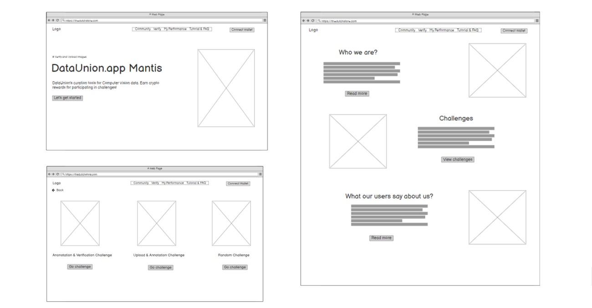
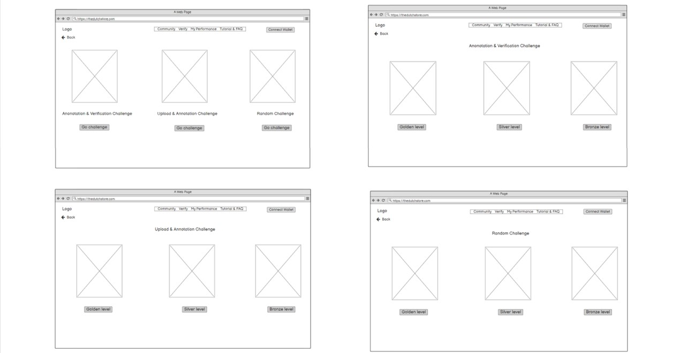
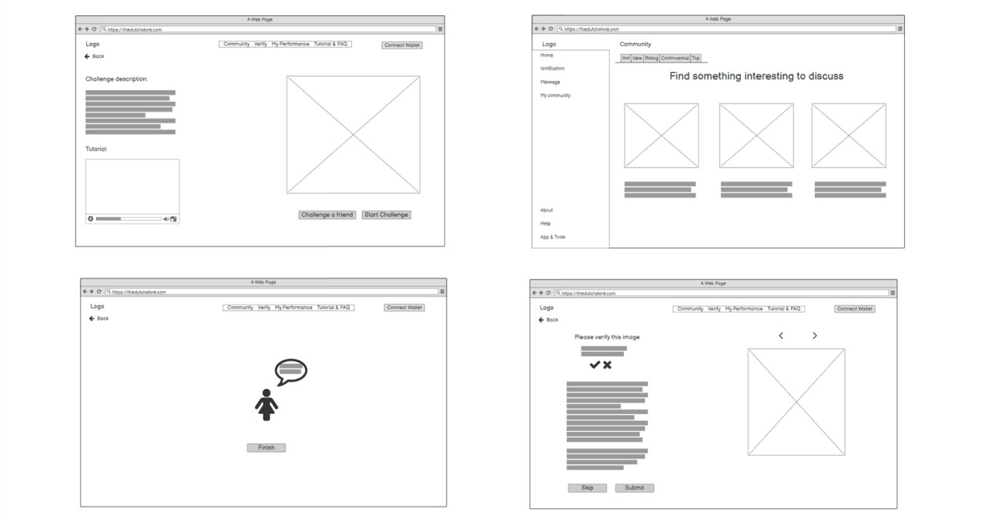
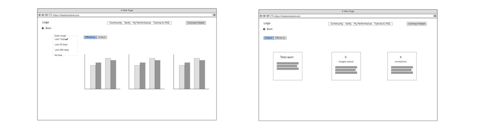

Introduction
Data and information are the fuel of the internet age, but processes for harnessing the value of data remain underdeveloped. With DataUnion.app, they are giving the influence and profit of data back to the people who make it. Ocean Protocol, which was founded in 2017 by Data Union, is a platform that aims to solve this problem by monetizing data as a financial asset. The Ocean Protocol model is predicated on the tokenization of data. On Ocean Protocol, datasets and data services are tokenized into ERC-20 assets that exist on the Ethereum blockchain. Data providers can sell data access to interested parties while benefiting from the enhanced security and provenance benefits provided by blockchain technology.
Data Union just did a launch of Dataunion.app Mantis. The current website interfaces are still lacking user engagement and user-friendliness for users. The client wants to onboard customers from all walks of life, so a fantastic UI/UX experience is important.
Orientation

Desk reserch
Crypto situation in Vietnam
Cryptocurrencies such as Bitcoin, Ethereum, Litecoin, and Ripple first appeared in Vietnam in 2009, and they quickly established themselves as a viable alternative to cold hard cash. It is estimated that over 5.9 million people, 6.1% of Vietnam’s total population, currently own cryptocurrency (TrippleA, n.d.). Vietnam ranks second in terms of cryptocurrency use, driven by remittance payments, according to a recent survey by a global provider of market and consumer data Statista. Statista’s survey findings showed that 21 percent of respondents in Vietnam said that they used or owned cryptocurrency (Nguyen, 2021). However, cryptocurrency is not accepted as a legal form of payment in Vietnam. The State Bank of Vietnam has issued a warning that buying, selling, and using cryptocurrency is risky and not protected by laws.Popular ways to earn crypto in Vietnam
Cryptocurrency exchanges are one of the popular methods to earn Bitcoin in Vietnam (Bitrawr, n.d.). In Vietnam, there are numerous exchanges that sell Bitcoin, and you can simply choose one that meets your needs such as Binance, Bitcoin Vietnam, etc. In additionally, after doing a lot of research I found that there is no Vietnamese platform offers user reward as crypto by uploading images or data like Data Union. There are also no articles mentioning the popularity among young Vietnamese of earning cryptocurrency by annotate photos or sharing data.Research aim & Research Questions
The purpose of this research is to understand what factors influenced Vietnamese young people living in the city looking into crypto to earn a living. Getting to know the popularity of earning crypto as reward by uploading images and
data platform like Dataunion.app’s Mantis in Vietnam and evaluate what problems the users encounter, and what they like and dislike, their feedback after using the website. It aids in making the website more user-friendly in the
future.
Research questions:
1. What makes Vietnamese young people living in ctiy looking at crypto currency as a source of income?
2. In what ways do young Vietnamese use to earn crypto?
3. What unanticipated problem are users facing when performing a specific task (e.g upload and verify images) Dataunion.app’s Mantis on? What are the causes of these problems?
Related research questions:
First question:
1. What factors have influenced you investing into crypto?
2. How does cryptocurrency regulations in Vietnam affect you?
3. How important is data privacy to you?
Deeper question:
1. In what ways do you usually earn crypto? Why do you prefer X more than other ways?
2. Which platforms do you use to upload your images or data most frequently?
3. Would you ever earn crypto as reward by uploading images and data? If the answer is no, what do you think about it?
User trialling research questions:
Before the test:
What is your first impression of the website?
Have you ever used this website before?
During the test:
Once they finish a task, ask: How difficult would you describe the effort it took to complete this task?
What is your opinion on [task]? What improvements do you think we could make to this task?
After the test:
What is your favorite part about the task?
Orientation
Choice of research methods
Interviewing and Usability Testing
I will use two research methods Interviewing and Usability Testing to gather data for my research. The location for the tests will all be online due to the pandemic. For Interviewing, I do it over Zoom or Google Meeting, I will ask only open-ended questions like my research questions e.g In what way do young Vietnamese earn ctypto? and observe their reaction. Three interviews might provide enough pain points to indicate a focus for the product. The number of similar outcomes will aid in prioritizing these issues. With Usablity Test research method, I will plan beforehand the tasks the participants will perform. During the test, pay attention and note where they got stuck, where they got surprised, where they hesitated, where they asked questions, where they revoked action, where they meant something else, and where they frowned. User testing reveals what new users understand, what they don’t as well as what misleads them. This reasearch method will help me to anwer my third reseach question.
Participant
My target group is young Vietnamese living in the city between 18 to 29 years old. I chose Vietnamese young people living in the city looking into cryptocurrencies for a way to earn a living as my target group because my client- Data Union is aiming to create the option of Universal Data Income. Especially for countries with low average salaries compared to e.g. Europe. Consequently, a developing country like Vietnam will meet that criterion.
The majority of cryptocurrency trading interfaces are in English, making it more difficult for elderly Vietnamese with limited English to use the currency. Younger participants, on the other hand, are usually thought to be more likely to embrace new technology and to be able to get an initial grasp of how to navigate the web in a shorter amount of time. This is why I wanted the participants to be young.
I recruited three participants. Their basic information and how they fit my criteria are written below.
First participant:
Name: Anh
Age: 22
Contact: gmsc3699@gmail.com
Anh is a young Vietnamese living in Ho Chi Minh city which makes her relevant to our criteria for a participant. She dropped out of University to become a cryptocurrency trader in 2019. I messaged her on Facebook and asked if she would participate, and she said yes.
Second participant:
Name: Hao
Age: 21
Contact: dkmyou14@gmail.com
Hao is a Vietnamese university student studying in Ho Chi Minh city. He has started investing into cryptocurrencies for a year. I called him to ask for help with this research and he agreed.
Third participant:
Name: Hien
Age: 25
Contact: kainguyen96@gmail.com
Hien is now working as a construction engineer in Ho Chi Minh city. He just invested into crypto three months ago. I sent him an invitation on Telegram to be a participant in my research, and he said yes.
Interviewing (3 participants)
User interviews are conducted by using online-meeting tools like Google Meeting and is recorded.
I'll start by having a friendly chat about their lives and days to give them the sense that they can trust me and that they shouldn't be concerned about anything. I'll ask them if we can start this meeting whenever I believe they're ready. When we get started, I'll ask whether it's acceptable if we record our meeting. After that, I'll provide a brief summary of what we'll be doing today. Here are four steps to take to get this information:
1. Recruit the right participants for the interview.
2. Prepare a structured interview with a list of questions to ask participant
3. Take notes
4. Analyze and report the result
First question:
4. What factors have influenced you investing into crypto?
5. How does cryptocurrency regulations in Vietnam affect you?
6. How important is data privacy to you?
Deeper question:
4. In what ways do you usually earn crypto? Why do you prefer X more than other ways?
5. Which platforms do you use to upload your images or data most frequently?
6. Would you ever earn crypto as reward by uploading images and data? If the answer is no, what do you think about it?
Usability testing (3 participants)After interviewing, I will conduct usability testing. During a test, participants will be asked to complete specific tasks while I ask them to share his screen to observer, watch, listen, and take notes. and I expected to gain insights into what they think about the research topic and related stuff. I will ask for each participant perform the usability test. What I expected from this research method is to find usability issues, gather qualitative data, and assess how satisfied participants are with the product overall. Here are five steps to take to get this information:
1. Recruit the right participants for the test
2. Identify what needs to be tested (feature)
3. Create a list of tasks for the participants to work through.
4. Take notes usability problems
5. Analyze and report the result
I'd like to share a list of usability testing questions with you below.
Before the test:
I will give them 3 minutes to explore the website freely then ask:
1. What is your first impression of the website?
2. Have you ever used this website before?
During the test: I will ask them to perform two main features of the website “Verify image” and “Upload image”. Once they finish a task, ask: 1. How difficult would you describe the effort it took to complete this task? 2. What is your opinion on [task]?
What improvements do you think we could make to this task? After the test:
1. How did the tasks go?
2. What is your favorite part about the task?
3. What was the most difficult task that you did?
Data analysis
The data gathered was a video recording of the interview held with each participant. This data was made into a transcript including interesting parts that answer my research questions or hint to design requirements has during the interview and the actions done on the website. This data was processed into observation notes and datacards. I intend to emphasize specific aspects of the interviews that will help me organize the material into data cards. I'd like to offer the first stage's outcome below.

I can focus on Usability Testing now that I've completed interviews and created data cards with information that will assist me answer my research questions.
This table displays unexpected problems found during the interview from each participant.

Below is the illustration of “Verify these tags” task:

Finally, I created clusters by putting everything into data cards.
The final stage of data processing was clustering information and building an affinity diagram to generate insights from my research that I can use to create personas and the design brief for this project in the
future.


Insights
Insights are an important component of our study that I developed based on my data analysis, which required me to go through several steps, including reviewing the data, determining the most relevant data to my research, and clustering
it. I'd like to share some insights from my research below:
Low-level insights from Interviewing:
• Earning crypto by uploading and verify images is not popular in Vietnam.
• Vietnamese young people are open to upload images and verify imagea then earn crypto as rewards even though those kinds of
platform is not popular in Vietnam.
• Buying is the most popular way to get crypto in Vietnam.
• Cryptocurrency regulations in Vietnam does not have effect on all participants.
Low-level insights from Usability Testing:
• The given tasks “Upload Images” and “Verify Images” are easily to accomplish by participants.
• The website interface is not attractive.
• The color buttons for verify tags are the same so users did not pay attention and skipped that task.
High-level insights:
• Uploading and verify images then receive crypto as rewards are unpopularity in Vietnam so professional and credible UI encourages users to use the website.
• The website should provide “Next/Previous/Skip
images” option in Veify images so users can feel in control.
• Creating a community helps user connect to people have the same interest and build a strong community.
• A tutorial explain the purpose of popular features helps users can take advantage on the website.
Personal
Insights are an important component of our study that I developed based on my data analysis, which required me to go through several steps, including reviewing the data, determining the most relevant data to my research, and clustering it. I'd like to share some insights from my research below:

Design Brief
Client:
In the twenty-first century, data is the new oil, and many corporations have already realized this to their benefit. The Data Union returns data's power and wealth to the individuals who created it. Contributors
become instant shareholders in data unions by using a reward system based on datatokens. The first Data Vault they've created is for images. The Ocean Protocol marketplace has it for purchase. Contributors upload them,
annotate them, and then verify their contributions. They are given datatokens as an incentive, making them stockholders in the dataset. This combination of mechanics produces an innate desire to make a positive contribution.
Assignment and problem description:
The challenge is to create a better Dataunion.app website. User engagement and user-friendliness are still lacking in current website interfaces. I need to solve that problem by helping them in finding a new and exciting
way to use their website DataUnion.
Target group:
My target group is young Vietnamese in the city between the ages of 18 and 29. Because my client, Data Union, is working to develop the option of Universal Data Income, especially for countries with lower average incomes
than, example, Europe. As a result, a developing country like Vietnam will be able to satisfy that requirement.
Because the majority of cryptocurrency trading interfaces are in English, making cryptocurrency use more difficult for older Vietnamese with limited English. Younger participants, on the other hand, are considered to
be more likely to embrace new technologies and to be able to get a basic understanding of how to navigate the web in much less time.
Context of use for the design:
The platform that Data Union promotes among students will be adaptive and user-friendly, allowing users to use it in their daily lives without difficulty. From the students' perspective, they must take pictures or
upload photos from their phone's library, and then make description and verify tags after handing it in on Dataunion.app website.
Key insights:
Uploading and verify images then receive crypto as rewards are unpopularity in Vietnam so I need to create a professional and credible UI encourages users to use the website.
In addition, creating a community helps the user connect to people have the same interest and then the network of sharing data will be expanded. Moreover, the website should provide “Next/Previous/Skip images”
option in Verify images so users can feel in control. A tutorial explains the purpose of popular features also helps users can take advantage of the website. Furthermore, I'd want to bring out that young Vietnamese will
be more likely to use Data Union if they can do so with their friends, participate in exciting tasks, and feel like they're playing a game.
Vision statement:
“To make people feel secure and enjoy when they first use the website”
To put it another way, as a designer, I aim to create an environment where young Vietnamese people can have fun while staying secure when using Data Union.
UX Factors
• Ease of use is a fundamental concept that explains how simple a thing is to use. "Users must be able to find Verify within 3 seconds after getting access to the interface," for example. No one wants
to spend hours to learn how the website works, and if f I design a user-friendly interface, it will encourage users to fall in love with Dataunion.app and the service it represents.
• Because my users are young and want to make money in an interesting, amusing, and playful way with some challenges and bonuses, the activation factor is ideal for them. Then it can encourage them to engage as
much as possible with Data Union.
• Credible is suit my users because those kinds of a platform like Dataunion.app is not popular in Vietnam. My target group has never heard and used the website before so a professional interface, working with no
doubt and no errors will gain trust from them.
The design question:
HMW create a credible and engaging platform that gains trust from users who never use it before?
Deliverables schedule
On May 21st I will hand in the Research report and Design brief
On June 14th, I'll meet with a customer to deliver my first prototype of the Data Union website.
The purpose of this meeting is to get feedback from the customer, tutor, and my classmates.
On June 22nd, I will give a presentation in which I will show my project's ultimate outcome.
On June 23rd, I will submit the Design report.
Research aim & Research Questions
Step 1: Create HMW’s Questions
I’ll presentt list of HMW’s questions below that help me establish a strategy to identify possible solutions for the problem and create frames that focus on the specific part of the design solution.
List of HMW’s Questions:
1. HMW make Data Union’s interface look more engaging to young people?
2. HMW create a website that is realiable and professional so that young Vietnamese feel secure working with Data Union?
3. HMW earn
the trust of young Vietnamese who have never heard about Data Union?
4. HMW make the process of doing challenges more enjoyable than it is now?
5. HMW make the platform feel more like a community where you can connect
with people who share your interests?
Step 2: Coming up with ideas
I began the creative session by brainstorming for divergent ideas after completing the phase of coming up with a probable HMW's question.
Brainstorming is often touted as a great technique that UX designers can
use to generate new and unique ideas.
Even outside of a structured session, brainstorming designers feel a lot more comfortable bouncing ideas off one another. Brainstorming introduces new ideas and perspectives, as well
as allowing for out-of-the-box thinking.

Next, I'd look at other similar websites that have great UX and UI design. As a result, I went on the search for similar interfaces. Looking at them made me feel more creative and motivated than before since I was able to come up with more practical ideas that might be implemented in real life.

Step 3: Identify what I am going to re-design and improve
I'd want to identify the parts of the Data Union.app Mantis website I'd like to improve. As a result, it is preferable to make changes to the Home page, Verify images, Statics page, and Tutorial page. A new landing
page and a community feature are also included.
Also, I thought it may be a good idea to divide the main page from the challenges. As a result, create two distinct pages for the users.
Prototype
Lo-fidelity Prototype
As I stated earlier, I want to create a website that gives my target audience the impression that it is trustworthy. So I attempted to think of a way to combine the factors, such as trust, joy, and a sense of community.
   
Choice of research methods
Through these final prototypes, I'd like to achieve three main goals:
• Gain trust from young Vietnamese people who never used Data Union before by making a realible
and professional website.
• Provide a memorable experience with a strong sense of community.
• Address all UX/UI unanticipated problems that occured in Usability testing.